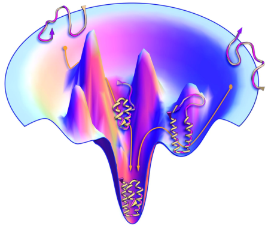
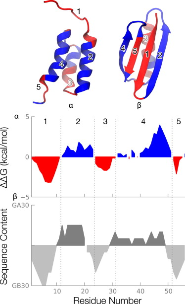

Sabemos que bajo condiciones fisiológicas el proceso de plegamiento es termodinámicamente favorable, es decir, que las macromoléculas son más estables en su conformación nativa que en otras posibles conformaciones. Y conocemos al menos los factores más importantes que afectan y guían al proceso de plegamiento. Por último, sabemos que el plegamiento es un proceso rápido, que tarda a lo sumo tiempos del orden de segundos. A pesar de esto, a día de hoy no sabemos predecir de forma precisa cómo se plegará una proteína o un ácido nucleico partiendo solamente de su secuencia.
Cuáles son las dificultades? Esto lo veremos tomando como ejemplo las proteínas, que se han estudiado mucho más a este nivel. Son fundamentalmente dos:
El proceso de plegamiento puede entonces verse como una exploración en un horizonte como el de la figura 2.2, donde observamos un máximo de estabilidad que se corresponde con la familia de conformaciones nativas, y otros máximos secundarios o locales que hay que descartar en la búsqueda, puesto que no se corresponden con la estructura nativa.
|

|
|

|
Desde este punto de vista, la búsqueda de la conformación nativa es como buscar una aguja en un pajar. Cómo es el espacio de conformaciones? Lo veremos por medio de la paradoja de Levinthal.